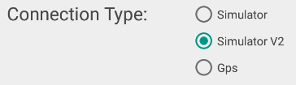

What is New
Redesign
of the menus. Added a menu bar to the left of the main navigation
window. The important functions can be accessed directly. The top
button will show or hide the menu so the underlying weather en notam
buttons are accessible. The bottom (more) item will open an popup menu
to access the setting, previous track loading, loading charts and the
is-new window menu items. The menu can be made visible when needed and
can be hidden during navigation, This will make it impossible to push
any menu by accident but is fast accesible when needed. The ability to
hide the meny is also an advantage on 7inch and smaller screens.This
version supports the new version of the FSPServer (V2). Due to problems
and limitations for further enhancements of the current server we've
created a new one. This version of the app supports both the new and
the old version of the server. You can make a choice within the
settings page. The new server can be downloaded from ous website
support section.

If you are currently experiencing problems connection to the old (V1) server you might want to try this version instead.
The new server and this version of
the app are still in beta state. Mainly error handling of broken
connections due to stopping of the server, network latency or related
problems can be an issue where the app might have to be restarted.
Other changes:
- V1.3.0.1:
- Introduction of the new FSP Server (V2)
- Added the new server in connection section of the Settings page
- V1.3.0.0:
- Layout changed, removed top menu and action bar
- Basic layout support for small devices (<7")
- Added close button on map-layers window
- Added app-lock button, app cannot be accidentally closed
- Activate/deactivate airspace check button added.
- Some crash bugfixes
- V1.2.0.3:
- Additional Bugfixes to the main V1.2 release
- V1.2
- Network related crashes with newer android (V5 and higher) are fixed.
- Network related crashes with newer android (V5 and higher) are fixed.
- Google maps V3 implemented
- Custom aviation style map
- Active airspace detection
- Layout changes for readability
- Lots of other small changes
Check our website for more info